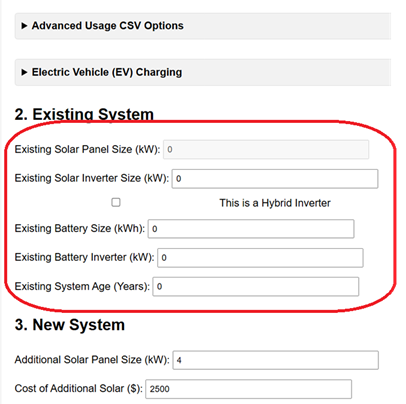

Manual Mode Note: If using Manual Mode, the "Total Import" values you enter from your bill are your total household consumption because you don't have existing solar self-consumption.
Step 2: Section 2 - Existing System Configuration
Because you checked the "No existing solar system" box in Step 1, this section becomes very simple:
Ensure all fields (Existing Solar Panel Size, Inverter Size, Battery Size, Battery Inverter, System Age) are set to zero (0).

The analyser will automatically disable some fields based on the checkbox in Section 1.
Setting these to zero ensures the Baseline calculation correctly reflects your current situation (no solar/battery) and that no degradation is applied to non-existent components.
Step 3: Configure New System & Other Sections
Now, proceed to configure the rest of the analyser sections as needed for your scenario. Click the links below for detailed guides on each section:
Section 3: New SystemEnter the details of the new system you are considering (panel size, battery size, costs).